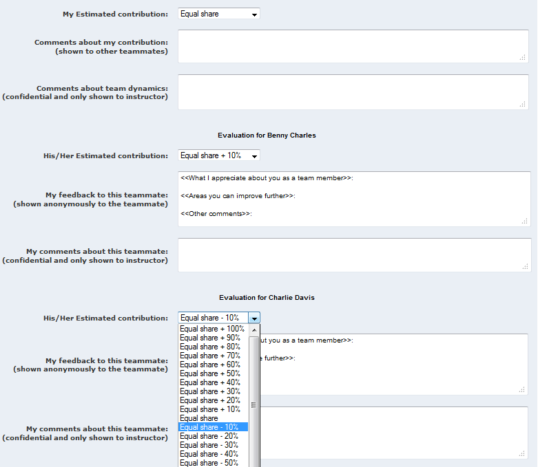

Table of Contents
- Getting Started
- Frequently Asked Questions
- What is the meaning of ‘claimed contribution’ and ‘perceived contribution’?
- When I log in, I cannot see any of the courses I used to have in the system. All I see is a blank screen. What should I do?
- When I enter the key, the system says ‘invalid key’.
- I do not see the course listed in the Courses page even though the registration key has been accepted. What should I do?
- What should I do if I'm unable to submit my evaluation?
- Go to the ‘Courses’ page and register for the course by entering the registration key you received for the system.
Note that you need a separate registration key for each course you use the system for. - Go to the Evaluations page and submit pending evaluations (if any).
- You can edit your submissions up to the closing time of the evaluations.
- You can view evaluation results after the teaching staff has published evaluation results. The system will notify you via email when results are available for viewing.
- What is the meaning of ‘claimed contribution’ and ‘perceived contribution’?
- Claimed contribution is the contribution you attributed to yourself.
- Perceived contribution is the the average value of the contribution your team members attributed to you, excluding the contribution you attributed to yourself. That means you cannot boost your perceived contribution by claiming a high contribution for yourself.
- Claimed contribution is the contribution you attributed to yourself.
- When I log in, I cannot see any of the courses I used to have in the system. All I see is a blank screen. What should I do?
Please email teammates@comp.nus.edu.sg so that we can help you rectify the problem. - When I enter the key, the system says ‘invalid key’.
Try again, taking extra care to copy the key exactly as it is in the registration email. If you still cannot register, email teammates@comp.nus.edu.sg with a copy of your registration email. - I do not see the course listed in the Courses page even though the registration key has been accepted. What should I do?
Click on the Courses tab again to refresh the page. - What should I do if I'm unable to submit my evaluation?
Email your evaluation to your course instructor and request him/her to submit your evaluation to the system. Provide the following data for your evaluation:
